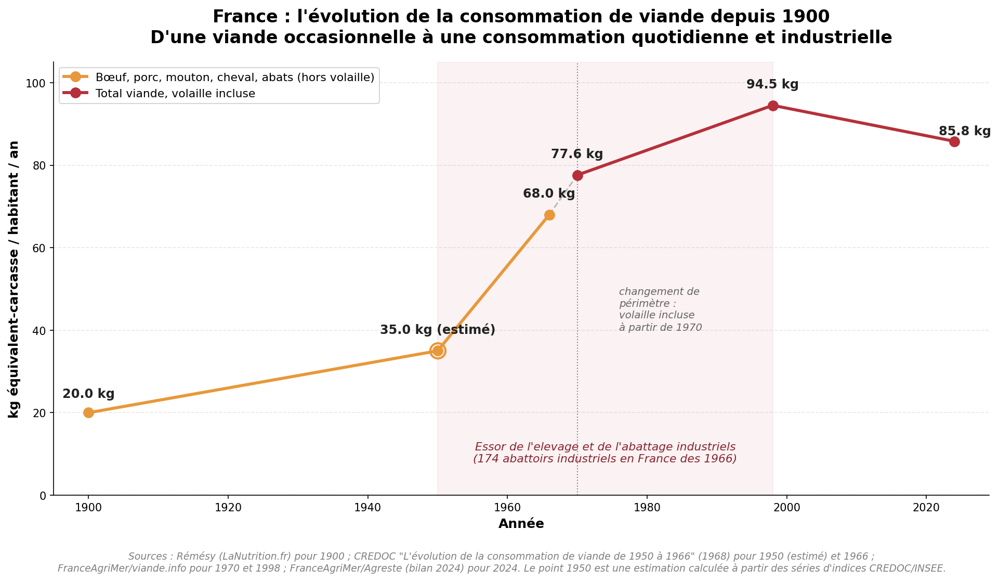
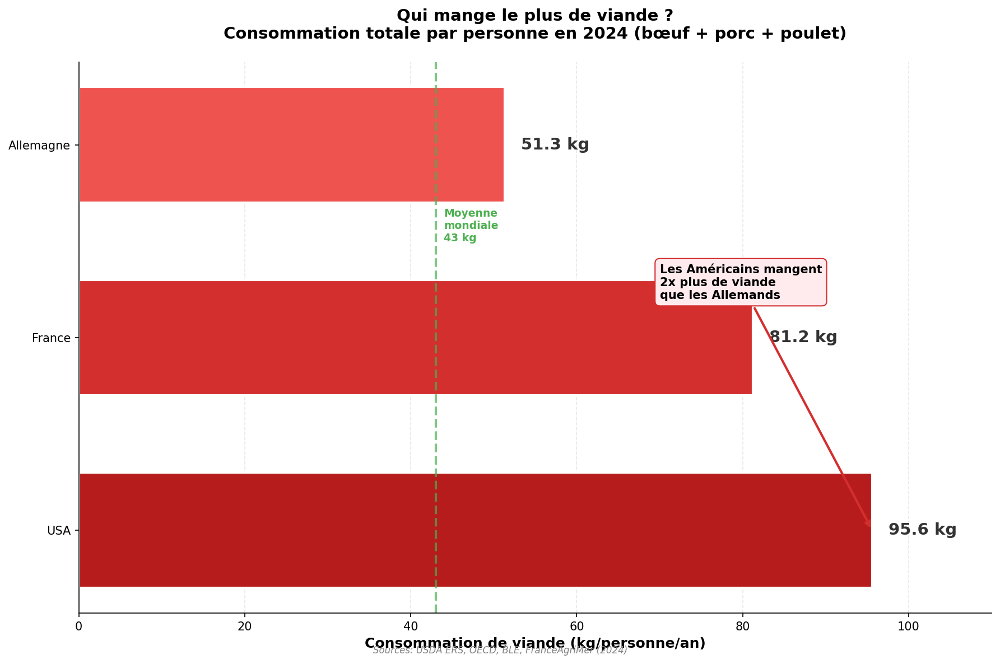
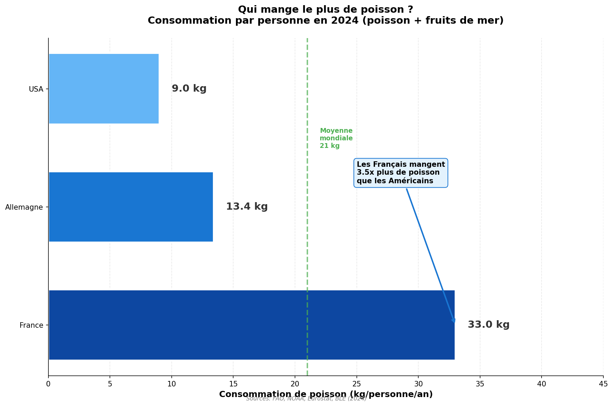
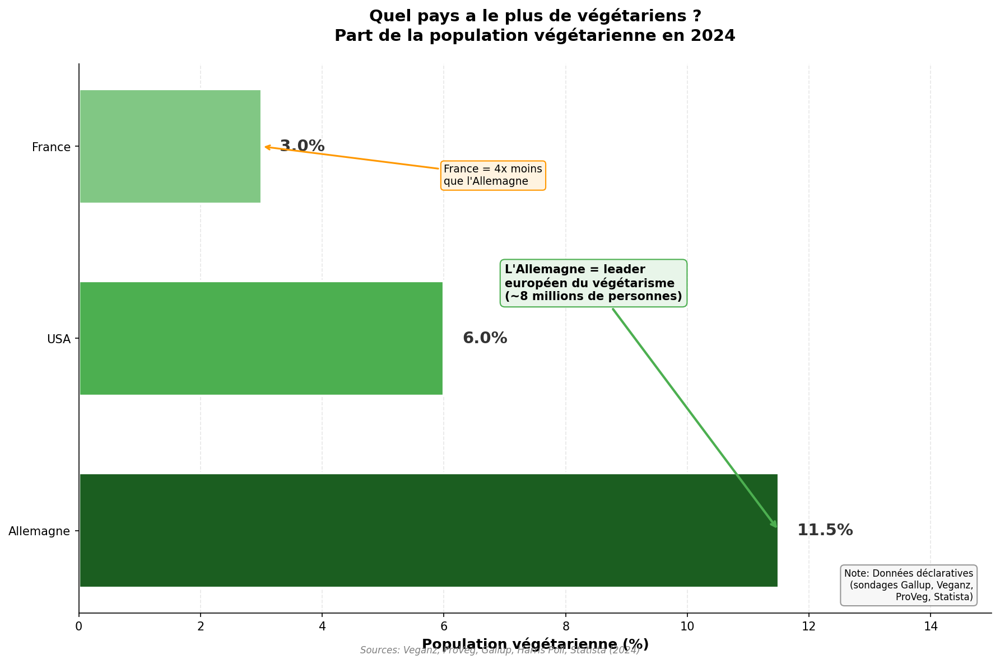
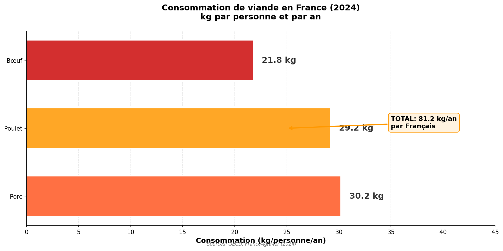
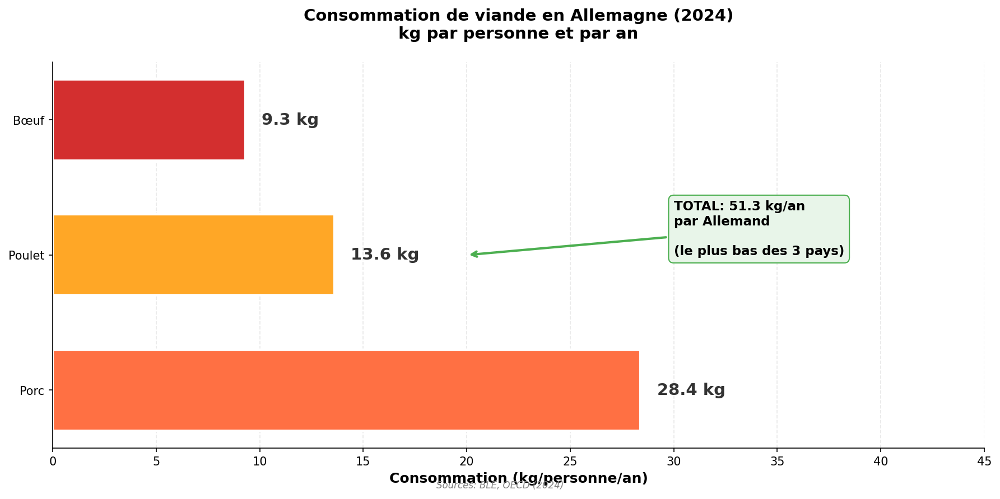
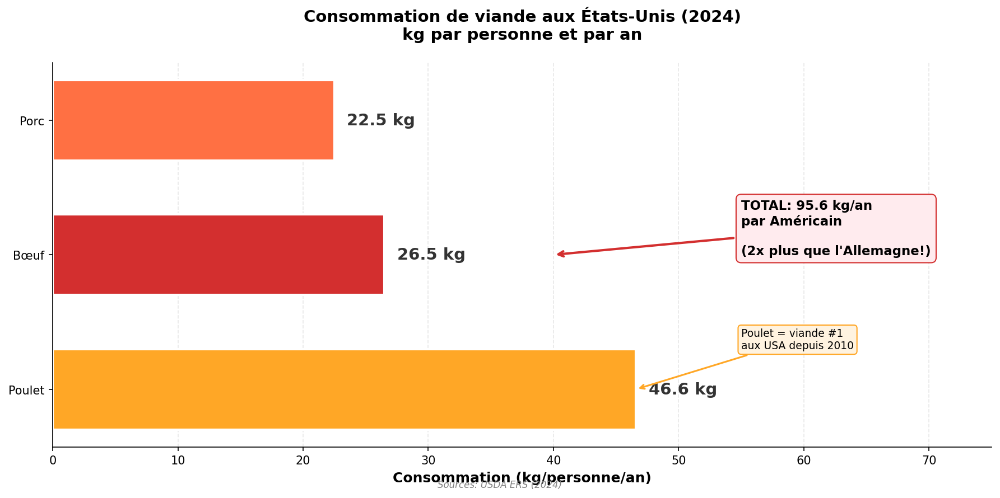

Ce que nos grands-parents mangeaient (et ce qu'on mange aujourd'hui)
En 1900, un Français mangeait environ 20 kg de viande par an.
Aujourd'hui : 86 kg. Plus de 4 fois plus — et même hors volaille
(absente des comptages avant 1970), la consommation a été multipliée par
plus de 3.
Le vrai basculement a eu lieu entre 1950 et 1970 : la consommation a presque
doublé en 20 ans, portée par l'essor de l'élevage et de l'abattage industriels
— dès 1966, la France comptait déjà 174 abattoirs industriels.

Sources : Remesy (LaNutrition.fr) ; CREDOC (1968) ; FranceAgriMer/viande.info ;
FranceAgriMer/Agreste (bilan 2024)
Ce qu'on considère aujourd'hui comme « normal » — manger de la viande tous les
jours, en grande quantité — n'a donc rien d'une tradition ancestrale. C'est une
invention du XXe siècle, rendue possible par l'industrialisation de
l'élevage.
Contexte
La consommation alimentaire varie fortement selon les pays et les cultures.
Cette étude compare trois économies majeures : la France, l'Allemagne et les États-Unis,
en analysant leur consommation de viande, de poisson, et leurs tendances vers le végétarisme.
Méthodologie : Toutes les données sont exprimées en kilogrammes
par personne et par an, basées sur les flux physiques réels (consommation apparente).
Consommation de viande
Comparaison de la consommation totale de viande (bœuf, porc, poulet) entre les trois pays.

Sources : OECD, USDA ERS, FAO (2024)
Constat : Les Américains consomment 95.6 kg de viande par personne et par an,
soit près du double de la consommation allemande (52 kg).
Consommation de poisson
La consommation de poisson et fruits de mer reflète les traditions culinaires
et l'accès aux ressources marines de chaque pays.

Sources : FAO, Eurostat (2024)
Observation : La France est le plus gros consommateur de poisson
parmi les trois pays (33.5 kg/an), bien au-dessus de la moyenne mondiale (21 kg).
Taux de végétarisme
Le végétarisme progresse différemment selon les pays, influencé par les facteurs
culturels, économiques et environnementaux.

Sources : ProVeg International, Statista, Gallup (2024)
Tendance : L'Allemagne est leader européen du végétarisme avec
11.5% de sa population, contre 5.2% en France et 5% aux USA.
Détail par pays
France

Répartition de la consommation de viande en France
Allemagne

Répartition de la consommation de viande en Allemagne
États-Unis

Répartition de la consommation de viande aux États-Unis
Données récapitulatives
| Indicateur |
France |
Allemagne |
USA |
| Viande totale (kg/an) |
84.5 |
52.0 |
95.6 |
| Bœuf (kg/an) |
22.5 |
10.0 |
26.5 |
| Porc (kg/an) |
29.5 |
28.0 |
22.5 |
| Poulet (kg/an) |
32.5 |
14.0 |
46.6 |
| Poisson (kg/an) |
33.5 |
14.5 |
22.3 |
| Végétariens (%) |
5.2% |
11.5% |
5.0% |
Analyse
USA : Champion de la consommation de viande avec 95.6 kg/personne/an.
Le poulet est devenu la viande numéro 1 depuis 2010, dépassant le bœuf.
France : Consommation élevée mais équilibrée entre les types de viande.
Leader sur le poisson (33.5 kg) grâce aux traditions culinaires.
Allemagne : Consommation de viande la plus basse des trois pays (52 kg)
et taux de végétarisme le plus élevé (11.5%). Un modèle de transition alimentaire ?
Sources
- OECD - Données consommation viande
- FAOSTAT - Production et consommation mondiale
- USDA ERS - Données agricoles USA
- Eurostat - Statistiques européennes
- ProVeg International - Statistiques végétarisme
- Statista - Données démographiques
- Remesy, C. — cité via LaNutrition.fr, consommation de viande France 1900
- CREDOC — « L'évolution de la consommation de viande de 1950 à 1966 », 1968
- FranceAgriMer / viande.info — consommation de viande 1970-1998
- FranceAgriMer / Agreste — bilan de la consommation de viande 2024